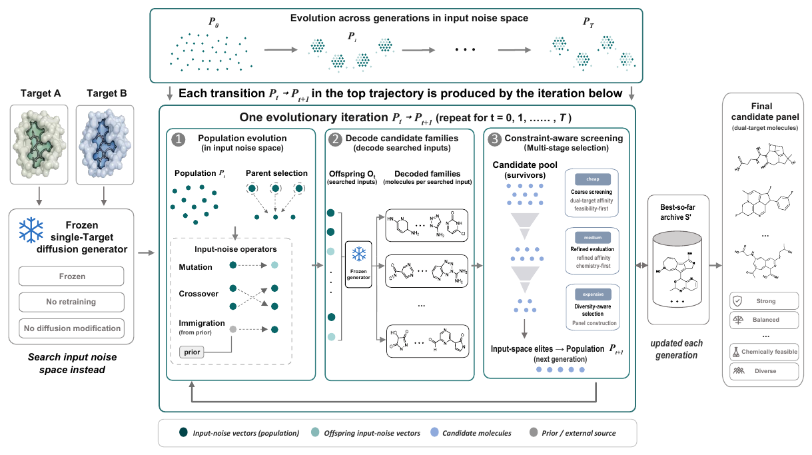
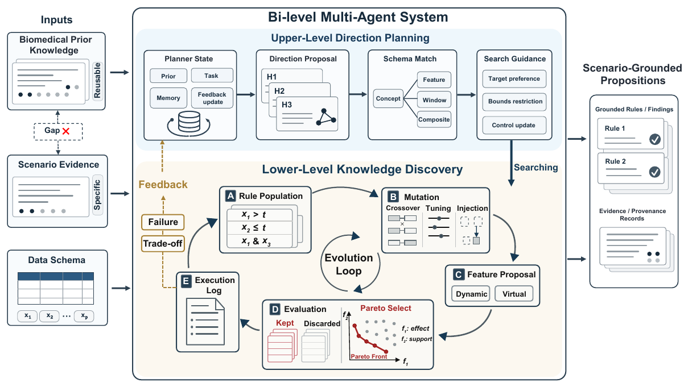
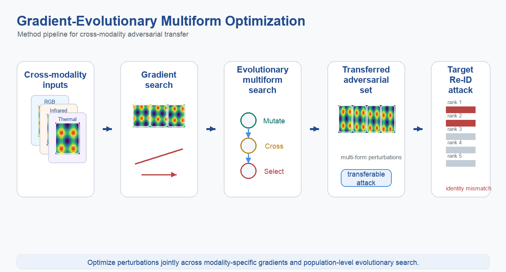
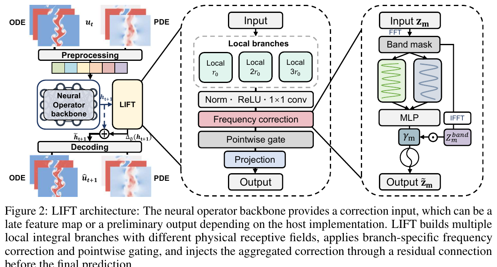
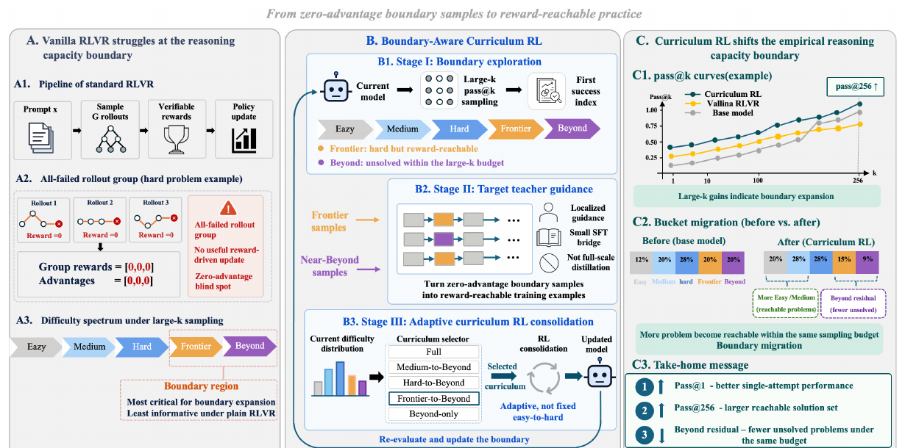
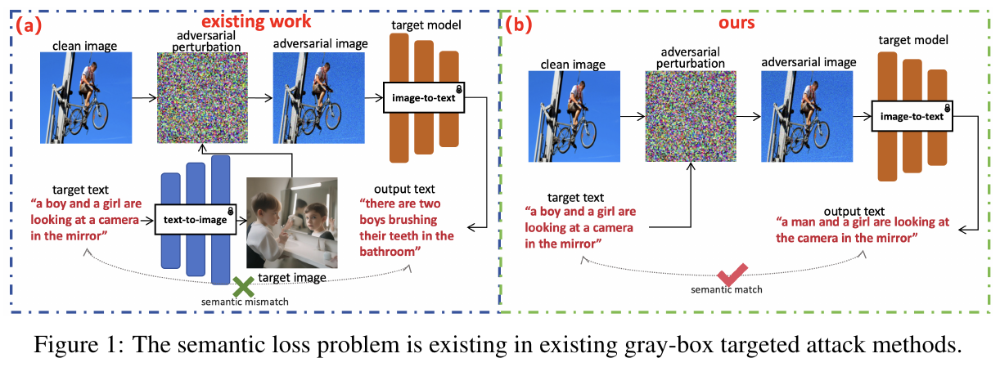
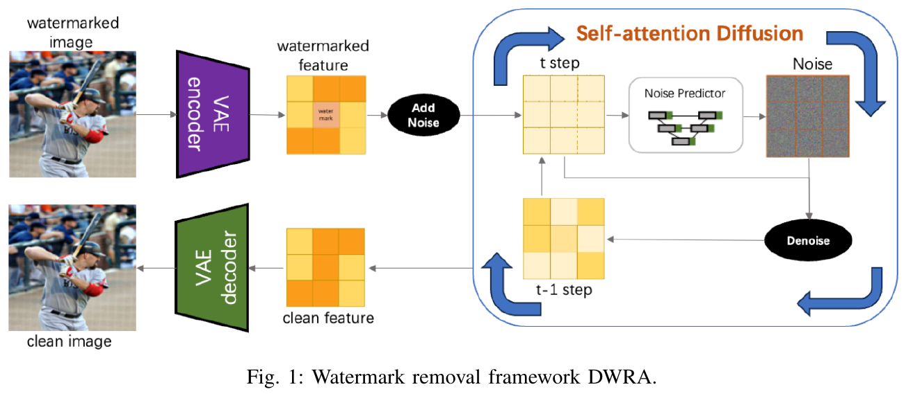
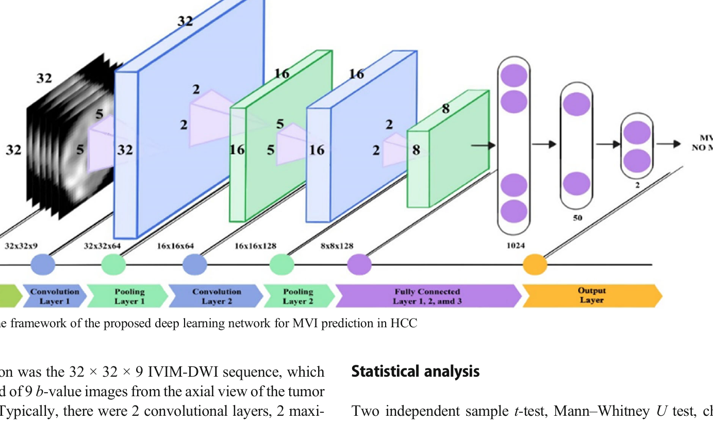

About
I am currently a Research Assistant at The Hong Kong University of Science and Technology (Guangzhou), working with Dr. Jintai Chen at the ML4H Lab. I will join the National University of Singapore as a Research Assistant in September 2026 and begin my Ph.D. study in January 2027.
My research focuses on trustworthy artificial intelligence, machine learning, and AI for healthcare. I am particularly interested in adversarial robustness, fairness, interpretability, multimodal learning, and clinically grounded biomedical discovery.
I received my M.Sc. in Artificial Intelligence from Xiamen University, advised by Prof. Min Jiang, and my B.Sc. in Computer Science and Technology from Guangzhou University of Chinese Medicine, advised by Prof. Wu Zhou.
News
- 2027.01🎓 Will begin Ph.D. study at the National University of Singapore.
- 2026.09💼 Will join the National University of Singapore as a Research Assistant.
- 2026.07📝 Five papers submitted to NeurIPS 2026.
- 2026.06📝 Paper accepted to MICCAI 2026: Text as a Compass.
- 2026.01💼 Joined HKUST(GZ) ML4H Lab as a Research Assistant.
- 2026.01📝 Paper accepted to ICLR 2026: VisionLaw.
- 2025.12📝 Paper accepted to AAAI 2026: Fading the Digital Ink.
- 2025.06🎓 Graduated from Xiamen University with Master's degree in AI.
- 2025.01📝 Three papers accepted to MIND 2025.
- 2024.09📝 Paper accepted to NeurIPS 2024: Ask, Attend, Attack.
- 2024.06📝 Paper accepted to IJCNN 2024: Cross-Task Attack.
📝 Publications
(* corresponding author; † co-first author; highlights represent personal contributions)
Summary: 18 papers, including 10 first-author papers at NeurIPS, AAAI (×2), MICCAI, IJCNN, BIBM, PMB, European Radiology, and MIND; 5 submissions under review at NeurIPS 2026.
NeurIPS 2026

Don't Retrain, Just Reuse: Recovering Dual-Target Molecules from Single-Target Diffusion Models
Qingyuan Zeng, Pengxiang Cai, et al.
NeurIPS 2026. Under Review. CCF-A.
- Recovers dual-target molecules from existing single-target diffusion models without retraining.
- Addresses practical constraints in multi-target drug discovery pipelines.
NeurIPS 2026

Can Broad Biomedical Knowledge be Contextualized into Scenario-Grounded Propositions?
Qingyuan Zeng, Ziyang Chen, et al.
NeurIPS 2026. Under Review. CCF-A.
- Contextualizes broad biomedical knowledge into scenario-specific propositions.
- Enables more grounded clinical decision support through structured knowledge extraction.
NeurIPS 2026

Adversarial Attacks Boosted by Gradient-Evolutionary Multiform Optimization
Yunpeng Gong, Qingyuan Zeng, Dian Xu, Zhenzhong Wang, Min Jiang*
NeurIPS 2026. Under Review. CCF-A.
- Combines gradient-based and evolutionary strategies to boost adversarial attack effectiveness.
- Demonstrates strong transferability across diverse model architectures.
NeurIPS 2026

LIFT: Local Integral Frequency Correction for Reactive Multiphysics Surrogates
Shu Jiang, Xingyu Zhang, Jiajing Lin, Qingyuan Zeng, et al.
NeurIPS 2026. Under Review. CCF-A.
- Proposes local integral frequency correction for improved physics simulation surrogates.
NeurIPS 2026

Curriculum Reinforcement Learning Can Incentivize Reasoning Capacity in LLMs Beyond the Base Model
Pengxiang Cai, Tianhe Fang, Xiangnan Li, Qingyuan Zeng, et al.
NeurIPS 2026. Under Review. CCF-A.
- Uses boundary-aware curriculum reinforcement learning to expand LLM reasoning capacity beyond base-model sampling.
Text as a Compass: Semantic-Navigated 3D Bone Collapse Prediction via Orthogonal Micro-Volume Primitives
Qingyuan Zeng, Zixin Guan, Yusen Chen, Zifeng Wu, Hao Li, Qian Ma, Zixiao Lu, Wei He, Leilei Chen, Wu Zhou*, Jintai Chen*
Medical Image Computing and Computer Assisted Intervention, 2026. CCF-B. Top 9%.
- Predicts osteonecrosis-related bone collapse from 3D medical imaging using orthogonal micro-volume primitives.
- Connects clinical textual knowledge with volumetric representation learning through semantic navigation.
VisionLaw: Inferring Interpretable Intrinsic Dynamics from Visual Observations via Bilevel Optimization
Jiajing Lin, Shu Jiang, Qingyuan Zeng, Zhenzhong Wang, Min Jiang*
International Conference on Learning Representations, 2026. CCF-A.
- Infers symbolic physical laws from visual observations using bilevel optimization.
- Advances interpretable machine learning for dynamical systems.
Fading the Digital Ink: A Universal Black-Box Attack Framework for 3DGS Watermarking Systems
Qingyuan Zeng, Shu Jiang, Jiajing Lin, Zhenzhong Wang, Kay Chen Tan, Min Jiang*
Proceedings of the AAAI Conference on Artificial Intelligence, 2026. CCF-A.
- Studies the robustness of 3D Gaussian Splatting watermarking systems under black-box access.
- Designs a universal attack framework for both bit-stream and image watermarking settings.
- Highlights practical risks for copyright protection in emerging 3D content pipelines.
NeurIPS 2024

Ask, Attend, Attack: An Effective Decision-Based Black-Box Targeted Attack for Image-to-Text Models
Qingyuan Zeng, Zhenzhong Wang, Yiu-Ming Cheung, Min Jiang*
Advances in Neural Information Processing Systems, 2024. CCF-A.
- Targets image-to-text systems using only decision feedback from the deployed model.
- Uses attention-guided search to improve query efficiency and targeted attack success rate.
- Exposes practical deployment risks in multimodal models that generate language from visual inputs.
Multi-View Subgraph Neural Networks: Self-Supervised Learning with Scarce Labeled Data
Zhenzhong Wang, Qingyuan Zeng, Wanyu Lin*, Min Jiang, Kay Chen Tan
IEEE Transactions on Neural Networks and Learning Systems, 2024. JCR-Q1.
- Develops multi-view subgraph learning for graph representation under limited labels.
- Combines self-supervision with substructure-level signals for data-scarce settings.
Generating Diagnostic and Actionable Explanations for Fair Graph Neural Networks
Zhenzhong Wang, Qingyuan Zeng, Wanyu Lin*, Min Jiang, Kay Chen Tan
Proceedings of the AAAI Conference on Artificial Intelligence, 2024. CCF-A.
- Generates human-interpretable, actionable explanations for fairness-aware graph neural networks.
- Supports bias diagnosis and mitigation in graph-based machine learning systems.
Cross-Task Attack: A Self-Supervision Generative Framework Based on Attention Shift
Qingyuan Zeng, Yunpeng Gong, Min Jiang*
International Joint Conference on Neural Networks, 2024. CCF-C.
- Proposes a cross-task adversarial attack framework using self-supervised attention shift.
- Demonstrates strong transferability with minimal task-specific adaptation.
MIND 2025 (Oral)

Black-Box Watermark Removal Using Diffusion Models and Self-Attention Mechanisms
Qingyuan Zeng, Yunpeng Gong, Chuangliang Zhang, Zhenzhong Wang, Min Jiang*
International Conference on Machine Intelligence and Nature-inspired Computing (MIND), 2025. Oral.
- Removes image watermarks using diffusion models under black-box query access.
- Applies self-attention mechanisms to guide watermark-region localization.
DualCAM++: Dual-Saliency Guided Sample Selection for Plug-and-Play Backdoor Enhancement
Chuangliang Zhang, Qingyuan Zeng, Yunpeng Gong, Zhenzhong Wang*, Jiajing Lin, Min Jiang
International Conference on Machine Intelligence and Nature-inspired Computing (MIND), 2025.
- Selects high-quality backdoor samples using dual saliency maps in a plug-and-play manner.
Inducing Implicit Focus through Structured Irrelevance for Robust Neural PDE Solvers
Yunpeng Gong, Qingyuan Zeng, et al.
International Conference on Machine Intelligence and Nature-inspired Computing (MIND), 2025.
- Improves neural PDE solver robustness by inducing implicit focus via structured irrelevance.
Eur Radiol 2022

IVIM Using Convolutional Neural Networks Predicts Microvascular Invasion in HCC
Baoer Liu†, Qingyuan Zeng†, Jianbin Huang, Jing Zhang, Zeyu Zheng, Yuting Liao, Kan Deng, Wu Zhou*, Yikai Xu
European Radiology, 2022. JCR-Q1.
- Predicts microvascular invasion in hepatocellular carcinoma using deep learning on IVIM DWI.
- Demonstrates clinical value for pre-operative HCC characterization.
An Attention-Based Deep Learning Model for Predicting Microvascular Invasion of Hepatocellular Carcinoma Using an Intra-Voxel Incoherent Motion Model of Diffusion-Weighted MRI
Qingyuan Zeng, Baoer Liu, Yikai Xu, Wu Zhou*
Physics in Medicine & Biology, 2021. JCR-Q1.
- First attention-based model integrating IVIM diffusion parameters for HCC MVI prediction.
- Achieves strong clinical prediction performance without contrast-enhanced imaging.
An Attention Based Deep Learning Model for Direct Estimation of Pharmacokinetic Maps from DCE-MRI Images
Qingyuan Zeng, Wu Zhou*
IEEE International Conference on Bioinformatics and Biomedicine, 2021. CCF-B.
- Directly estimates pharmacokinetic maps from DCE-MRI using an attention-based network.
- Eliminates reliance on traditional compartmental model fitting, reducing computation time.
💻 Research Experience & Education
Ph.D. Student
National University of Singapore
Doctoral study in artificial intelligence and machine learning.
Research Assistant
National University of Singapore
Research on AI and machine learning.
Research Assistant
HKUST(GZ) ML4H Lab
Research on trustworthy and clinically grounded machine learning, medical image analysis, and biomedical discovery. Advised by Dr. Jintai Chen.
M.Sc. in Artificial Intelligence
Xiamen University
Research on security, robustness, interpretability, and fairness of AI algorithms. Advised by Prof. Min Jiang. GPA: 89.1/100; Ranking: 17/90.
Medical Imaging Algorithm Engineer
Bayer AG, Guangzhou
Undergraduate industry experience during my B.Sc.; deep learning for accelerating DCE-MRI pharmacokinetic parameter map computation.
B.Sc. in Computer Science and Technology
Guangzhou University of Chinese Medicine
Research on AI methods for clinical tumor characterization. Advised by Prof. Wu Zhou. GPA: 85.3/100; Ranking: 13/66.
🏆 Honors & Awards
- Second Prize, National Traditional Chinese Medicine College Programming Contest, 2021
- Third Prize, China Collegiate Programming Contest - Guangdong Provincial Programming Contest, 2021
- Provincial Project, College Students' Innovative Entrepreneurial Training Plan Program, 2021
- Second Prize, Blue Bridge Cup National Software and Information Technology Talents Competition, 2020
- Provincial Excellence Award, China Undergraduate Mathematical Contest in Modeling (Guangdong), 2020
- Second Prize / Third Prize Scholarship, Guangzhou University of Chinese Medicine, 2019 and 2020
Academic Service
Reviewer: AAAI, CVPR, NeurIPS, MICCAI, IEEE Transactions on Neural Networks and Learning Systems (TNNLS), IEEE Transactions on Circuits and Systems for Video Technology (TCSVT), IEEE Computational Intelligence Magazine (CIM), IEEE Transactions on Evolutionary Computation (TEVC), and IEEE Transactions on Cognitive and Developmental Systems (TCDS).
Skills
- Programming: Python, C++, Unity
- ML Frameworks: PyTorch, TensorFlow
- Research: Trustworthy AI, Medical Image Analysis, Graph Learning, Multimodal Robustness, Biomedical Discovery
- English: IELTS 6.5 (L7, R8, W6, S5.5)